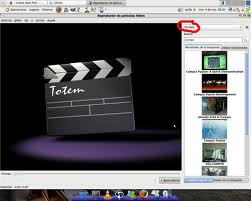
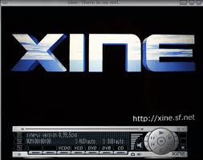

3. Reproductores de Video
|
Para que un reproductor de vídeo
digital pueda abrir y reproducir un archivo de vídeo ha de disponer
del códec apropiado para el formato del archivo de vídeo. Hay
reproductores específicos de cada formato: QuickTime
Player para
el formato MOV, Real Player
para archivos RM, PowerDVD (Windows)
o Xine
(Linux) para archivos MPEG.
Otra posibilidad es disponer de un reproductor multimedia general, como puede ser el Reproductor de Windows Media de Microsoft o el reproductor Mplayer de Linux, y que éstos estén actualizados con los diferentes códecs de vídeo. El reproductor del escritorio GNOME de Linux se denomina Totem y está basado en xine. Permite reproducir películas y canciones. Proporciona varios niveles de ampliación y una vista a pantalla completa.
Mplayer es
un reproductor de vídeo digital que es software libre y se encuentra
tanto para Linux como para Windows. En
alguna ocasiones presenta algunos errores y, en el apartado de enlaces
interesantes de este tema (10. Reproductores) dispones de una web que
te ayudará a subsanarlos. El reproductor VLC es un programa multimedia para reproducir la mayoría de formatos de audio y vídeo (MPEG-1, MPEG-2, MPEG-4, DivX, mp3, ogg,...) así como DVDs, VCDs... No tendremos que preocuparnos por el formato en el que tengamos el vídeo o archivo de sonido porque funciona con los más habituales. |
|  |
Este artículo está licenciado bajo Creative Commons Attribution-NonCommercial-ShareAlike 2.5 License
Jo.R.C.A. 2004 - 2010

Edición de Audio y Video con Software Libre by José Ramón Cerdeira Alonso is licensed under a Creative Commons Reconocimiento-No comercial-Compartir bajo la misma licencia 3.0 España License